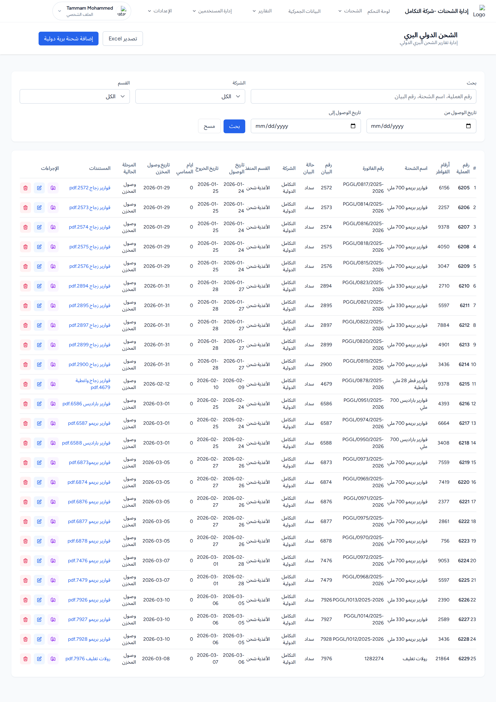
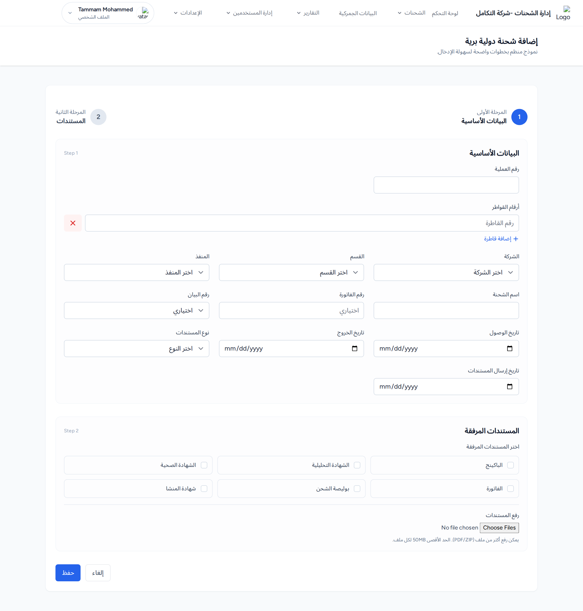

1. القائمة والبحث
البحث في رقم العملية واسم الشحنة ورقم البيان، مع فلاتر الشركة والقسم والتاريخ. يعرض الجدول أعمدة منها: أرقام القواطر، رقم الفاتورة، حالة البيان، أيام المماسي، تاريخ وصول المخزن، المرحلة الحالية.

قائمة الشحن الدولي البري: حقل البحث والفلاتر، أعمدة «أرقام القواطر» و«أيام المماسي»، وزرّا «تصدير Excel» و«إضافة شحنة برية دولية».
المخرجات المتوقعة: يعرض الجدول الشحنات البرية المطابقة، 50 شحنة لكل صفحة.
2. إضافة شحنة برية دولية
اضغط إضافة شحنة برية دولية. النموذج من قسمين:
القسم 1 — البيانات الأساسية
رقم العملية *، أرقام القواطر (حقل متعدد عبر زر «إضافة قاطرة»)، الشركة *، القسم، المنفذ، اسم الشحنة، رقم الفاتورة، رقم البيان، تاريخ الوصول، تاريخ الخروج، نوع المستندات، تاريخ إرسال المستندات.
القسم 2 — المستندات المرفقة
اختيار أنواع المستندات ورفع ملفات (PDF/ZIP بحد 50م.ب للملف). ثم اضغط حفظ.

نموذج إضافة شحنة دولية برية: حقل «رقم العملية»، حقل «أرقام القواطر» مع زر «إضافة قاطرة»، قائمة «الشركة»، وقسم رفع المستندات.
المخرجات المتوقعة: رسالة «تم إضافة الشحنة الدولية البرية بنجاح» والعودة إلى القائمة.
3. التعديل والحذف والتصدير
- تعديل: يفتح النموذج بالبيانات الحالية وقسم «المستندات الحالية» لتحديد ما يُحذف، ثم تحديث. رسالة: «تم تحديث الشحنة الدولية البرية بنجاح».
- حذف: أيقونة الحذف الحمراء ثم التأكيد. رسالة: «تم حذف الشحنة الدولية البرية بنجاح».
- تصدير Excel: يصدّر الشحنات حسب الفلاتر الحالية.
4. تتبّع الشحنة البرية
مماثل لتتبّع الشحنة البحرية لكن بمراحل خاصة بالنقل البري. من أيقونة تتبع في صف الشحنة:
- اضغط إضافة سجل تتبع واختر المرحلة (تظهر مراحل النقل البري فقط).
- حدّد تاريخ الحدث والموقع؛ وإن تطلّبت المرحلة حاويات أو مخزناً تظهر الحقول المناسبة.
- أضف ملاحظات ثم اضغط حفظ سجل التتبع.
المخرجات المتوقعة: «تم إضافة سجل التتبع بنجاح»، وتُحدَّث المرحلة الحالية للشحنة.